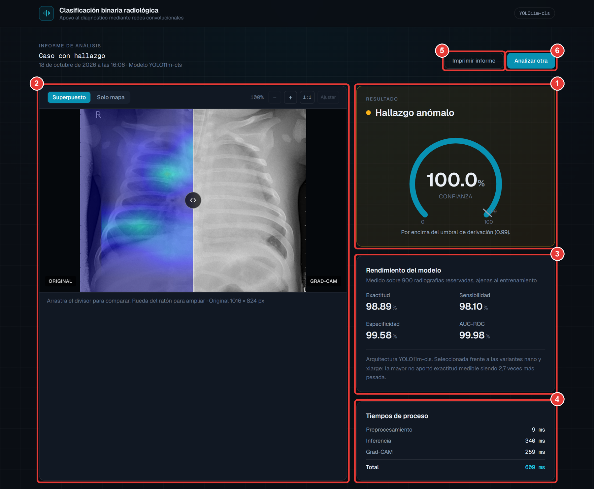

Trabajo Especial de Grado · Ingeniería Informática
Sistema de servicio para la clasificación binaria radiológica con base en algoritmos de Deep Learning
Una segunda lectura en segundos para priorizar radiografías de tórax
Chirinos · Ocando · Paris Tutor académico: Dr. José Oropeza Tutora metodológica: Dra. María Paz
Universidad Privada Dr. Rafael Belloso Chacín Maracaibo, 2026
El problema
Cada placa espera lo mismo, sea urgente o no
0
diagnósticos de enfermedades respiratorias en Venezuela al cierre de 2023 (Cáritas Venezuela)
0
casos de neumonía y otras afecciones respiratorias en el Zulia en 2024 (Convite)
0
herramientas de triaje automatizado en el servicio público local de radiología
Más demanda, menos radiólogos y equipos analógicos: la interpretación manual se volvió el cuello de botella, y la fatiga visual aumenta los falsos negativos.
Antecedentes
Cada antecedente resolvió una pieza; ninguno las unió
Antecedente
Lo que aporta
Lo que faltaba
Lubinus y otros (2021)
Potencial de las CNN en imágenes diagnósticas
Revisión teórica, sin sistema
Andrade (2021); Martín de Diego (2022)
Clasificadores binarios con redes convolucionales
Modelo aislado, sin servicio usable
Vidaurre (2023)
Software como servicio en la nube
Fuera del ámbito médico
Hernández (2023)
Sistema de soporte a decisiones
Fuera del ámbito médico
El vacío: clasificar, explicar visualmente el resultado y ofrecerlo desde cualquier navegador, en una sola herramienta.
?
Formulación del problema
¿De qué manera el desarrollo de un sistema de servicio basado en algoritmos de Deep Learning permitirá optimizar la clasificación binaria de radiografías de tórax para agilizar el diagnósticomédico?
Medio
Sistema de servicio con Deep Learning
Propósito
Clasificación binaria de radiografías
Fin
Agilizar el diagnóstico médico
Objetivos
Un objetivo general, seis pasos encadenados
Objetivo general
Desarrollar un sistema de servicio para la clasificación binaria radiológica con base en algoritmos de deep learning.
Objetivos específicos
Paso 01
Analizar cómo se clasifica hoy
Paso 02
Determinar los requerimientos funcionales
Paso 03
Diseñar lógicamente el sistema
Paso 04
Construirlo a partir del diseño
Paso 05
Demostrar su funcionalidad con pruebas
Paso 06
Elaborar el manual de usuario
Bases teóricas
Cuatro pilares, cada uno con dos autores desde 2021
Pilar 1
Aprendizaje profundo
Prince (2023) · Zhang, Lipton, Li y Smola (2023)
Pilar 2
Software como servicio
Kamlofsky (2022) · IBM (2024)
Pilar 3
Clasificación normal / anormal
Çallı y otros (2021) · Ait Nasser y Akhloufi (2023)
Pilar 4
Explicabilidad y evaluación
Muhammad y Bendechache (2024) · Nahm (2022)
Variables: sistema de servicio y clasificación binaria radiológica.
Tipo y diseño
Una propuesta que nace de un diagnóstico
Tipo
Proyectiva
Propuesta de solución a partir de un diagnóstico previo (Bernal, 2022)
Diseño
No experimental, transversal
Radiografías tal como fueron captadas, en un solo momento
Criterio fijado
Sensibilidad ≥ 95 %
Criterio experimental de aceptación del modelo
Se combinan la voz de los especialistas, recogida en entrevistas, y la medición numérica del modelo.
Metodología
Ocho fases, cinco referentes
I · Senn (1992)
Investigación preliminar
II · CRISP-DM
Comprensión del negocio
III · CRISP-DM
Comprensión de los datos
IV · CRISP-DM
Modelado
V · Beck (1999)
Codificación (XP)
VI · CRISP-DM
Evaluación
VII · Rook (1986)
Validación (Modelo en V)
VIII · Kendall y Kendall
Documentación
CRISP-DM según Chapman y otros (2000). Ninguna metodología por sí sola cubría diagnóstico, datos, software, pruebas y manuales.
Población y técnicas
Dos fuentes: personas e imágenes
Informantes
3 médicos radiólogos y 1 ingeniero en informática; población pequeña, estudiada completa
Técnica: entrevista semiestructurada con guía de entrevista
Radiografías de tórax
0
4.273 con hallazgo 4.737 normales
900 reservadas solo para la prueba final · Técnica: revisión documental de un conjunto público
Calidad de los datos
Antes de medir, comprobamos que la prueba fuera independiente
Paso 1
Huella MD5
Sin coincidencias, pero insuficiente: la plataforma redimensiona las imágenes
Paso 2
Huella perceptual
256 bits que resisten cambios de tamaño y compresión
Hallazgo
0
repetido con el entrenamiento: descartado como prueba externa
La partición de 900 imágenes resultó genuinamente independiente: sus métricas son válidas.
Análisis y ética
Medimos lo que importa al médico, con límites claros
Cómo se analizó
Clase positiva: radiografía con hallazgo
Sensibilidad, especificidad y matriz de confusión
Curva ROC y área bajo la curva
Calibración de la confianza
Tres escalas comparadas: nano, medium y xlarge
Resguardos éticos
Imágenes públicas, sin datos identificables
Aviso permanente: no es un dispositivo médico
La decisión y la firma siguen siendo del radiólogo
Servicio protegido contra el uso abusivo
Resultados
YOLO11m-cls sobre 900 radiografías nunca vistas
0
Sensibilidad (meta: 95 %)
0
Especificidad
0
Exactitud
0
Error de calibración
10 errores en 900, ninguno con confianza superior a 0,99: bajo ese umbral el sistema pide revisión humana.
xlarge acertó una imagen más, siendo 2,7 veces más pesado: se eligió medium.
El sistema
Del navegador al resultado, sin instalar nada

Tres capas: navegador, intermediario y servicio de inferencia en la nube
Grad-CAM corregido: el mapa corresponde a la clase predicha
Filtro que rechaza imágenes que no son radiografías
0 pruebas automáticas: 58 unitarias, 14 de integración y 45 de aceptación
Discusión y alcance
Lo que confirma, lo que sorprendió y hasta dónde llega
Confirma
El potencial de las CNN señalado por los antecedentes, ahora llevado de modelo aislado a servicio en uso
Sorprendió
Datos “de evaluación” contaminados, un explicador defectuoso y un modelo grande que no aportó exactitud
Límites
Población pediátrica, sin validación clínica prospectiva y un filtro que no reconoce la región anatómica
Los resultados valen para el conjunto evaluado; llevarlos a adultos u otros centros exige una evaluación externa.
Cierre
No reemplaza al radiólogo: le dice por dónde empezar.
Aporte
Clasificación, explicación visual, filtrado y pruebas en un solo servicio web
Recomendamos
Diagnosticar los flujos de cada centro, anonimizar las imágenes y recalibrar el umbral
Siguiente paso
Evaluación en adultos, validación prospectiva y filtro anatómico
Gracias. Quedamos atentos a sus preguntas.
Clasificación binaria radiológica · URBE 2026
Armando Paris
01 / 14
Continúa
Eduardo Chirinos
← → navegar · F pantalla completa · P notas · B pantalla negra · R repetir